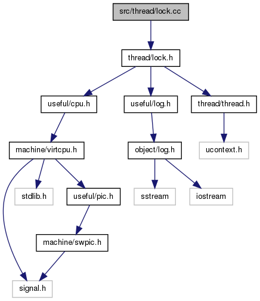

OOStuBS - Technische Informatik II (TI-II)
2.4
Main Page
Related Pages
Classes
Files
File List
File Members
src/thread/lock.cc File Reference
#include "
thread/lock.h
"
Include dependency graph for lock.cc:

Go to the source code of this file.
Generated on Fri Aug 9 2013 12:59:46 for OOStuBS - Technische Informatik II (TI-II) by
1.7.6.1
 1.7.6.1
1.7.6.1